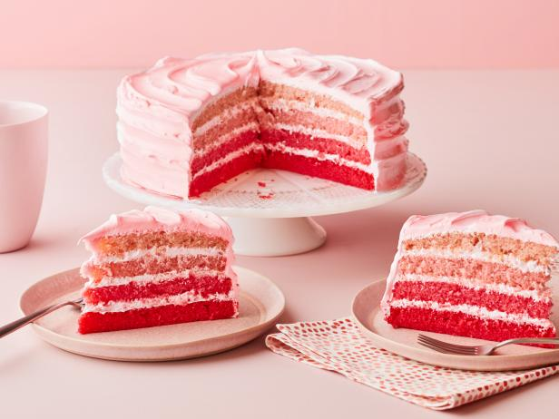

Bolo de Limonada rosa
Ingredientes
Bolo de Limonada rosa
| Ovos |
6 |
| Leite |
140ml |
| Óleo |
100ml |
| Açúcar |
200g |
| Farinha de trigo |
300g |
| Fermento em pó |
2 colheres (chá) |
| Baunilha |
1 colher (chá) |
| raspas de limão |
1 |
| corante alimentar rosa |
Recheio
| Manteiga sem sal |
100 g |
| Cream cheese |
450g |
| Açúcar cristal |
90g |
| Mel |
2 colheres (sopa) |
| Suco de limão |
1 |
Calda
| Água |
100 ml |
| Suco de limão |
1/2 |
| Acúcar |
50 g |
Modo de preparo
- Comece pelo bolo: unte 3 formas de 18 cm de diâmetro com manteiga e enfarinhe. Pré-aqueça o forno a 180ºC. Misture os ovos, o leite e o óleo. Em seguida misture o açúcar e as raspas do limão. Peneire a farinha e o fermento, junte à mistura e mexa bem. Pingue um pouco do corante e misture, colocando mais pouco a pouco, se necessário, até dar a cor desejada. Divida a massa nas 3 formas. Leve para assar por aproximadamente 20 a 25 minutos ou até que o palitinho saia limpo. Retire do forno e deixe esfriar.
- Quando estiver morno, desenforme os bolos e deixe-os repousando sobre uma gradinha.
Enquanto o bolo assa, prepare o recheio: coloque todos os ingredientes no bowl da batedeira e bata até que a mistura fique homogênea. Prepare também a calda: numa panelinha coloque o açúcar e a água e leve para ferver. Assim que o açúcar estiver completamente dissolvido, desligue.
- Montagem: Acerte os topos dos bolos e, com um aro (usamos um de 17 cm), retire as laterais para que o bolo fique mais bonito. Coloque um bolo como base. Pincele um pouco de calda e esparrame uma fina camada de recheio. Coloque as framboesas formando a lateral do recheio e, com a ajuda de um saco de confeitar, recheie o bolo com 1/3 do creme. Cubra com outro bolo e repita o procedimento. Finalize com mais creme e framboesas. Leve para gelar por pelo menos 1 hora antes de servir.